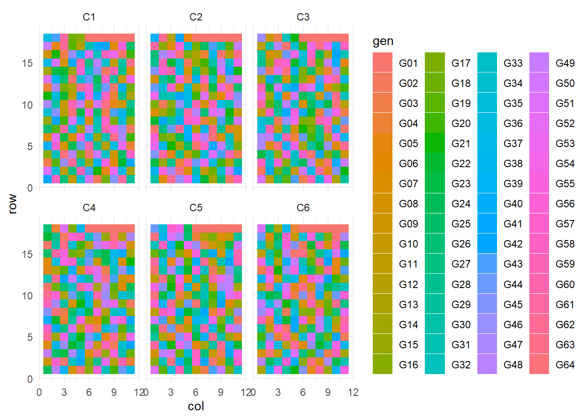

Day 25 More multilevel designs
July 16th, 2025
25.2 Review: statistical models
\[y = \text{Treatment sources of variability} + \text{Design sources of variability} + \varepsilon\]
25.3 Multi-location trials
- Nature of multi-location trials
- Objectives of a multi-location trial
- How many years?
- Exercise: find the experimental unit and the groups that are not independent.
25.3.1 Example
Multi-environment trial of 64 corn hybrids in six counties in North Carolina. Each location had 3 replicates in in incomplete-block design.
library(tidyverse)
library(agridat)
library(lme4)
library(emmeans)
df_multienv <- agridat::besag.met
df_multienv %>%
ggplot(aes(col, row))+
geom_tile(aes(fill = block))+
facet_wrap(~county)
## Groups Name Std.Dev.
## block:county (Intercept) 3.9453
## county (Intercept) 36.2722
## Residual 18.2529| Source | df |
|---|---|
| Location | l - 1 = 5 |
| Block (Location) | (b-1) * l = 7*6 = 42 |
| Genotype | g-1 = 63 |
| Error | 1078 |
| Total | N-1 = 1187 |
25.3.1.1 Marginal means
## gen emmean SE df lower.CL upper.CL
## G01 111.2 15.5 5.93 73.2 149
## G02 107.4 15.5 5.93 69.4 145
## G03 99.1 15.5 5.93 61.1 137
## G04 115.1 15.5 5.93 77.1 153
## G05 120.3 15.5 5.93 82.3 158
## G06 107.4 15.5 5.93 69.5 145
## G07 106.7 15.5 5.93 68.7 145
## G08 113.7 15.5 5.93 75.7 152
## G09 110.1 15.4 5.88 72.1 148
## G10 95.4 15.4 5.88 57.4 133
##
## Degrees-of-freedom method: kenward-roger
## Confidence level used: 0.95## contrast estimate SE
## c(1, -1, 0, 0, 0, 0, 0, 0, 0, 0, 0, 0, 0, 0, 0, 0, 0, 0, 0, 0, 3.81 6.35
## df t.ratio p.value
## 1029 0.601 0.5479
##
## Degrees-of-freedom method: kenward-roger25.4 Subsampling
Review: split-plots
- Split-plot designs are multi-level designed experiments.
- Randomization happens in different levels.
- Split-plot designs can happen in blocked designs or in CRDs.
- Importance of accounting for the subsampling (df and variance)
25.4.1 Example
A split-plot experiment in three blocks. Whole-plot is ’management’, sub-plot is ’time’ of application, with two subsamples. The data are the heights, measured on two single-hill sampling units in each plot.
## 'data.frame': 192 obs. of 5 variables:
## $ time : Factor w/ 4 levels "T1","T2","T3",..: 1 1 1 1 1 1 1 1 2 2 ...
## $ manage: Factor w/ 8 levels "M1","M2","M3",..: 1 2 3 4 5 6 7 8 1 2 ...
## $ rep : Factor w/ 3 levels "R1","R2","R3": 1 1 1 1 1 1 1 1 1 1 ...
## $ sample: Factor w/ 2 levels "S1","S2": 1 1 1 1 1 1 1 1 1 1 ...
## $ height: num 104.5 92.3 96.8 94.7 105.7 ...m_subsample <- lmer(height ~ manage * time + (1|rep/manage/time), data = df_subsample)
VarCorr(m_subsample)## Groups Name Std.Dev.
## time:manage:rep (Intercept) 4.0433
## manage:rep (Intercept) 2.7422
## rep (Intercept) 4.3692
## Residual 1.3205| Source | df |
|---|---|
| Block | b - 1 = 2 |
| Management | m - 1 = 7 |
| Error(whole plot) or Mgmt(Block) | (m-1) * b - 7 = 7*3 -7 = 14 |
| Time | t - 1 = 3 |
| Mgmt x Time | 7*3 = 21 |
| Time(Mgmt x Block) | (t-1) * 8 * 3 - 24= 72 - 24 = 48 |
| Subsample aka Error | (s-1) * 4 * 8 * 3 = 96 |
| Total | N-1 = 191 |
## NOTE: Results may be misleading due to involvement in interactions## contrast estimate SE df t.ratio p.value
## c(1, -1, 0, 0, 0, 0, 0, 0) 5.85 2.81 14 2.085 0.0559
##
## Results are averaged over the levels of: time
## Degrees-of-freedom method: kenward-roger## NOTE: Results may be misleading due to involvement in interactions## contrast estimate SE df t.ratio p.value
## c(1, -1, 0, 0) -2.68 1.2 48 -2.238 0.0299
##
## Results are averaged over the levels of: manage
## Degrees-of-freedom method: kenward-roger